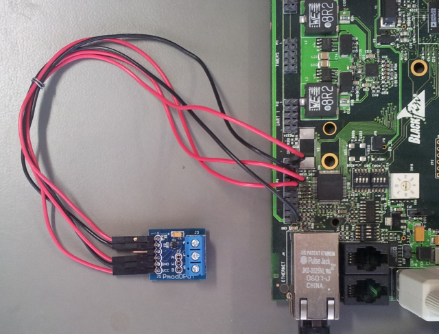

Digital Potentiometer Linux Driver¶
Supported Devices¶
Reference Circuits¶
Evaluation Boards¶
PMOD-DPOT
Description¶
The ad525x_dpot driver exports a simple sysfs interface. This allows you to work with the immediate resistance settings as well as update the saved startup settings. Access to the factory programmed tolerance is also provided, but interpretation of this settings is required by the end application according to the specific part in use.
Files¶
Each dpot device will have a set of eeprom, rdac, and tolerance files. How many depends on the actual part you have, as will the range of allowed values.
The eeprom files are used to program the startup value of the device.
The rdac files are used to program the immediate value of the device.
The tolerance files are the read-only factory programmed tolerance settings and may vary greatly on a part-by-part basis. For exact interpretation of this field, please consult the datasheet for your part. This is presented as a hex file for easier parsing.
Source Code¶
Status¶
| Source | Mainlined? |
|---|---|
| git | Yes |
Files¶
| Function | File |
|---|---|
| driver | drivers/misc/ad525x_dpot.c |
| i2c bus support | drivers/misc/ad525x_dpot-i2c.c |
| spi bus support | drivers/misc/ad525x_dpot-spi.c |
| include | drivers/misc/ad525x_dpot.h |
Example platform device initialization¶
Example Platform / Board file (I2C Interface)¶
static struct i2c_board_info __initdata bfin_i2c_board_info[] = {
## if defined(CONFIG_AD525X_DPOT) || defined(CONFIG_AD525X_DPOT_MODULE)
{
I2C_BOARD_INFO("ad5245", 0x2c),
},
{
I2C_BOARD_INFO("ad5245", 0x2d),
},
## endif
}
Example Platform / Board file (SPI Interface)¶
static struct spi_board_info bfin_spi_board_info[] __initdata = {
## if defined(CONFIG_AD525X_DPOT) || defined(CONFIG_AD525X_DPOT_MODULE)
{
.modalias = "ad5291",
.max_speed_hz = 5000000, /* max spi clock (SCK) speed in HZ */
.bus_num = 0,
.chip_select = 1,
},
## endif
};
Note
Old Method
static struct spi_board_info bfin_spi_board_info[] __initdata = {
## if defined(CONFIG_AD525X_DPOT) || defined(CONFIG_AD525X_DPOT_MODULE)
{
.modalias = "ad_dpot",
.platform_data = "ad5291",
.max_speed_hz = 5000000, /* max spi clock (SCK) speed in HZ */
.bus_num = 0,
.chip_select = 1,
},
## endif
};
Adding Linux driver support¶
Configure kernel with “make menuconfig” (alternatively use “make xconfig” or “make qconfig”)
Note
The ad525x_dpot driver depends on CONFIG_SPI or CONFIG_I2C
Device Drivers --->
[*] Misc devices --->
<*> Analog Devices Digital Potentiometers
<*> support I2C bus connection
<*> support SPI bus connection
Hardware configuration¶
{kind=link}
Driver testing¶
Locate the device in your sysfs tree. This is probably easiest by going into the common i2c directory and locating the device by the i2c slave address.
# ls /sys/bus/i2c/devices/
0-0022 0-0027 0-002f
So assuming the device in question is on the first i2c bus and has the slave address of 0x2f, we descend (unrelated sysfs entries have been trimmed).
# ls /sys/bus/i2c/devices/0-002f/
eeprom0 rdac0 tolerance0
You can use simple reads/writes to access these files:
# cd /sys/bus/i2c/devices/0-002f/
# cat eeprom0
0
# echo 10 > eeprom0
# cat eeprom0
10
# cat rdac0
5
# echo 3 > rdac0
# cat rdac0
3